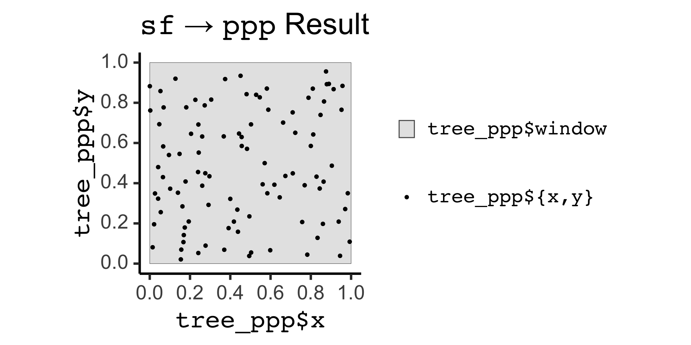
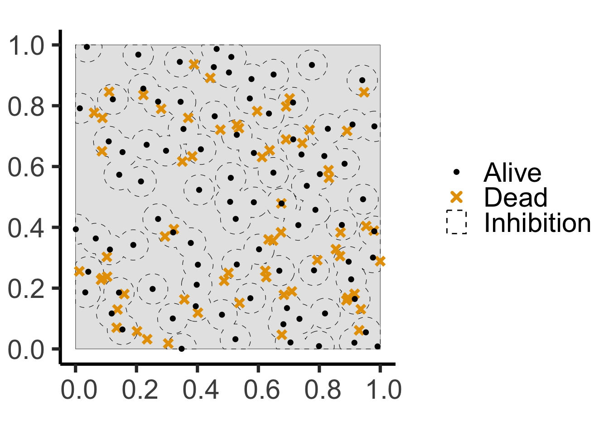
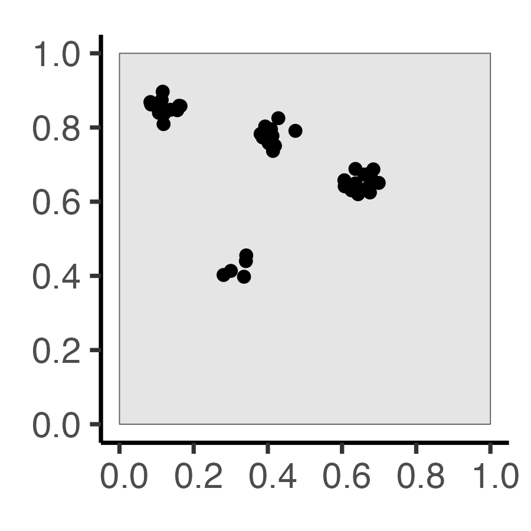
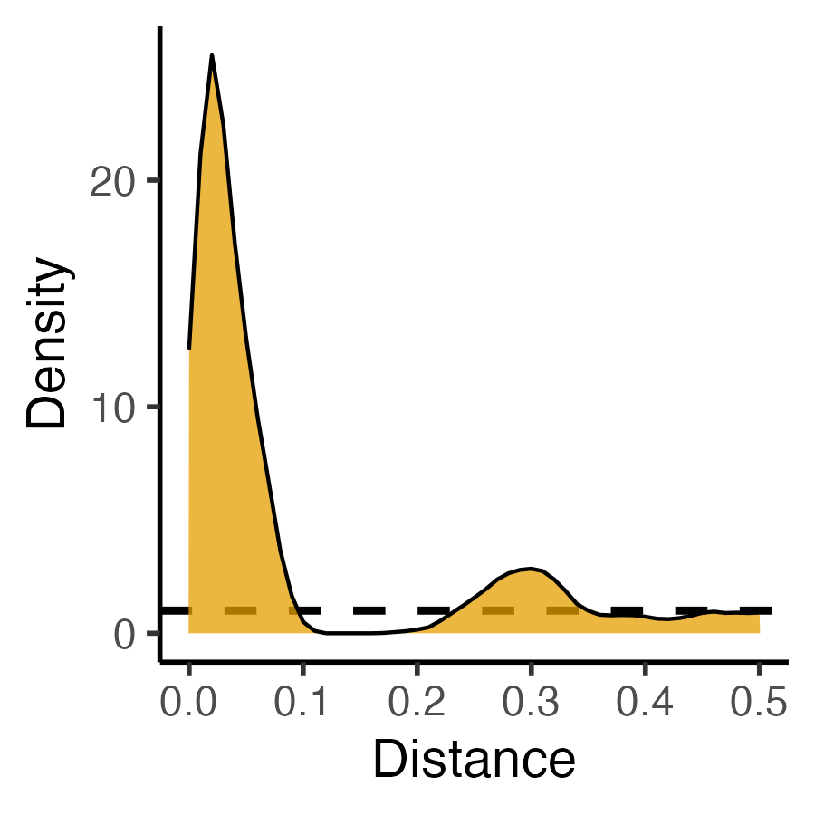

Week 8: Null Models and Marked Point Processes
PPOL 6805 / DSAN 6750: GIS for Spatial Data Science
Fall 2024
Wednesday, October 16, 2024
[From Last Week] Our New Library: spatstat!
- Homepage: spatstat.org
- GitHub: github.com/spatstat
- Book: Baddeley, Rubak, and Turner (2015) [Companion website]
- PDF: here

ppp \(\leftrightarrow\) sf Conversion
ppp to sf Conversion:
| label | geom |
|---|---|
| window | POLYGON ((0 0, 1 0, 1 1, 0 … |
| point | POINT (0.5735346 0.6204983) |
| point | POINT (0.7526621 0.4205887) |
| point | POINT (0.8129999 0.6844816) |
Code
pois_sf |> ggplot() +
geom_sf(data=pois_sf |> filter(label=="window"), aes(fill='grey')) +
geom_sf(data=pois_sf |> filter(label != "window"), aes(color='black')) +
md_theme_classic(base_size=26) +
scale_fill_manual(name=NULL, values=c("gray90"), labels=c("<span style='font-family: mono'>label == 'window'</span>")) +
scale_color_manual(name=NULL, values=c("black"), labels=c("<span style='font-family: mono'>label == 'point'</span>")) +
labs(title = "<span style='font-family: mono'>ppp</span> → <span style='font-family: mono'>sf</span> Result")
sf to ppp Conversion:
Code
Planar point pattern: 100 points
window: polygonal boundary
enclosing rectangle: [0, 1] x [0, 1] unitsCode
tree_ppp_sf <- tree_ppp |> sf::st_as_sf()
tree_ppp_sf |> ggplot() +
geom_sf(aes(fill='gray90')) +
geom_sf(data=tree_ppp_sf |> filter(label != "window"), aes(color='black')) +
md_theme_classic(base_size=26) +
scale_fill_manual(name=NULL, values=c("gray90"), labels=c("<span style='font-family: mono'>tree_ppp$window</span>")) +
scale_color_manual(name=NULL, values=c("black"), labels=c("<span style='font-family: mono'>tree_ppp${x,y}</span>")) +
labs(
title = "<span style='font-family: mono'>sf</span> → <span style='font-family: mono'>ppp</span> Result",
x="<span style='font-family: mono'>tree_ppp$x</span>",
y="<span style='font-family: mono'>tree_ppp$y</span>"
) +
guides(fill = guide_legend(order = 1),
color = guide_legend(order = 2))
The Tree-Grid Mystery
- You’ve been hired as an archaeologist—congratulations! Your job: determine whether arrangement of trees formed:
- Naturally, via a process of resource competition, or
- Artificially, via an ancient civilization planting in a grid…

Two Possible Histories…


Code (Step 2: Competition)
age <- runif(npoints(pois_ppp))
pair_dists <- pairdist(pois_ppp)
close <- (pair_dists < r)
later <- outer(age, age, ">")
killed <- apply(close & later, 1, any)
killed_ppp <- pois_ppp[killed]
alive_ppp <- pois_ppp[!killed]
pois_window_sf <- pois_ppp |> sf::st_as_sf() |> filter(label=="window")
pois_killed_sf <- killed_ppp |> sf::st_as_sf() |> filter(label=="point")
pois_alive_sf <- alive_ppp |> sf::st_as_sf() |> filter(label=="point")
alive_buff_sf <- pois_alive_sf |> sf::st_buffer(r) |> sf::st_union() |> sf::st_intersection(pois_window_sf)
ggplot() +
geom_sf(data=pois_window_sf) +
geom_sf(data=alive_buff_sf, aes(color='Inhibition', shape='Inhibition'), linetype='dashed') +
geom_sf(data=pois_killed_sf, aes(color='Dead', shape='Dead'), size=2, stroke=2) +
geom_sf(data=pois_alive_sf, aes(color='Alive', shape='Alive'), size=1, stroke=1) +
scale_shape_manual(name=NULL, values=c("Alive"=19, "Dead"=4, 'Inhibition'=21), labels=c("Alive", "Dead", "Inhibition")) +
scale_color_manual(name=NULL, values=c("Alive"="black", "Dead"=cb_palette[1], "Inhibition"="black"), labels=c("Alive", "Dead", "Inhibition")) +
guides(shape=guide_legend(override.aes=list(fill = "white"))) +
theme_classic(base_size = hn_base) +
theme(plot.margin = unit(c(0,0,0,0), "cm"))
Why Do Events Appear Where They Do?
Code
library(tidyverse)
library(spatstat)
set.seed(6809)
N <- 60
r_core <- 0.05
obs_window <- square(1)
### Clustered data
clust_ppp <- rMatClust(
kappa=6,
scale=r_core,
mu=10
)
clust_sf <- clust_ppp |> sf::st_as_sf()
clust_plot <- clust_sf |>
ggplot() +
geom_sf(size=2) +
theme_classic(base_size=18)
ggsave("images/clust_ppp.png", clust_plot, width=3, height=3)
# Intensity fn
clust_intensity <- density(clust_ppp, sigma = 0.1)
png("images/clust_intensity.png")
par(mar=c(0,0,0,2), las=2, oma=c(0,0,0,0), cex=2)
plot(clust_intensity, main=NULL)
contour(clust_intensity, add = TRUE)
dev.off()
### PCF
clust_pcf <- spatstat.explore::pcf(
clust_ppp, divisor="d",
r=seq(from=0.00, to=0.50, by=0.01)
)
clust_pcf_plot <- clust_pcf |> ggplot(aes(x=r, y=iso)) +
geom_hline(yintercept=1, linetype='dashed', linewidth=1) +
geom_area(color='black', fill=cb_palette[1], alpha=0.75) +
scale_x_continuous(breaks=seq(from=0.0, to=1.0, by=0.1)) +
labs(x="Distance", y="Density") +
theme_classic(base_size=14)
ggsave("images/clust_pcf.png", clust_pcf_plot, width=3, height=3)| Original Data | First-Order | Second-Order |
|---|---|---|
| \(N = 60\) Events | Events modeled individually \(\implies\) Intensity function \(\lambda(\mathbf{s})\) |
Events modeled pairwise \(\implies\) \(K\)-function \(K(\vec{h})\) |
|  |  |
 |
What Do These Functions “Detect”?
Code
sq_base <- 16
sq_psize <- 2.5
obs_window <- square(1)
r0 <- 0.2
sq_df <- tibble::tribble(
~x, ~y,
0.5-r0,0.5-r0,
0.5+r0,0.5+r0,
0.5-r0,0.5+r0,
0.5+r0,0.5-r0
)
sq_sf <- sf::st_as_sf(
sq_df,
coords = c("x","y")
)
sq_ppp <- as.ppp(sq_sf, W=obs_window)
sq_ppp |> sf::st_as_sf() |> ggplot() +
geom_sf(size=sq_psize) +
theme_classic(base_size=sq_base)

Code
### PCF
pcf_result <- spatstat.explore::pcf(
sq_ppp,
divisor="d",
r=seq(from=0.00, to=0.8, by=0.01)
)
pcf_result |> ggplot(aes(x=r, y=iso)) +
geom_hline(yintercept=1, linetype='dashed', linewidth=1.5) +
geom_area(color='black', fill=cb_palette[1], alpha=0.75) +
scale_x_continuous(breaks=seq(from=0.0, to=1.0, by=0.1)) +
theme_classic(base_size=sq_base)


Code
csr_pcf_result <- spatstat.explore::pcf(
csr_ppp,
divisor="d",
r=seq(from=0.00, to=0.8, by=0.01)
)
csr_pcf_result |> ggplot(aes(x=r, y=iso)) +
geom_hline(yintercept=1, linetype='dashed', linewidth=1.5) +
geom_area(color='black', fill=cb_palette[1], alpha=0.75) +
scale_x_continuous(breaks=seq(from=0.0, to=1.0, by=0.1)) +
theme_classic(base_size=sq_base)
Poisson Point Processes (CSR)
- \(N \sim \text{Pois}(\lambda)\)
- For \(i \in \{1, \ldots, N\}\):
- Generate \(X_i, Y_i \sim \mathcal{U}(\texttt{win})\)
Code
sim_base <- 22
sim_psize <- 2
sim_xticks <- seq(from=0.0, to=1.0, by=0.2)
sim_yticks <- seq(from=0.0, to=1.0, by=0.2)
gen_pois_df <- function(num_sims=1) {
pois_sims <- spatstat.random::rpoispp(
lambda = 60, nsim=num_sims
)
return(tibble::as_tibble(pois_sims))
}
#pois_dfs <- gen_pois_df()
#pois_dfs |> head()
pois_sims <- spatstat.random::rpoispp(
lambda = 60, nsim=3
)
to_sim_df <- function(cur_sim, sim_name) {
cur_df <- tibble::as_tibble(cur_sim) |> mutate(sim=sim_name)
return(cur_df)
}
combined_df <- imap(.x=pois_sims, .f=to_sim_df) |> bind_rows()
combined_df |> ggplot(aes(x=x, y=y)) +
geom_point(size=sim_psize) +
facet_wrap(vars(sim)) +
coord_equal() +
theme_classic(base_size=sim_base) +
theme(panel.spacing.x = unit(2, "lines")) +
scale_x_continuous(breaks=sim_xticks) +
scale_y_continuous(breaks=sim_yticks)
Simple Sequential Inhibition (SSI)
- \(\mathbf{S} = \varnothing\)
- While not
done:- Generate \(\mathbf{E} = (X, Y) \sim \mathcal{U}(\texttt{win})\)
- Check if \(\mathbf{E}\) within
runits of any existing point in \(\mathbf{S}\)- If it is, throw \(\mathbf{E}\) away. Otherwise, add \(\mathbf{E}\) to \(\mathbf{S}\)
-
done=TRUEif \(\mathbf{S}\) hasnpoints OR has been the same forgiveupsteps
Code
capture.output(ssi_sims <- spatstat.random::rSSI(
r = 0.05, n=60, nsim=3
), file=nullfile())
combined_df <- imap(.x=ssi_sims, .f=to_sim_df) |> bind_rows()
combined_df |> ggplot(aes(x=x, y=y)) +
geom_point(size=sim_psize) +
facet_wrap(vars(sim)) +
coord_equal() +
theme_classic(base_size=24) +
theme(panel.spacing.x = unit(3, "lines")) +
scale_x_continuous(breaks=sim_xticks) +
scale_y_continuous(breaks=sim_yticks)
Cox Processes: Random Points plus Random Intensity
Code
# inhomogeneous LGCP with Gaussian covariance function
m <- as.im(function(x, y){
5 - 1.5 * (x - 0.5)^2 + 2 * (y - 0.5)^2
}, W=owin())
lgcp_sims <- rLGCP("gauss", m, var=0.15, scale =0.5, nsim=3)
# lgcp_combined_df <- imap(.x=ssi_sims, .f=to_sim_df) |> bind_rows()
par(mfrow=c(1,3))
plot(attr(lgcp_sims[[1]], "Lambda"))
points(lgcp_sims[[1]], col='grey90', pch=19)
plot(attr(lgcp_sims[[2]], "Lambda"))
points(lgcp_sims[[2]], col='grey90', pch=19)
plot(attr(lgcp_sims[[3]], "Lambda"))
points(lgcp_sims[[3]], col='grey90', pch=19)